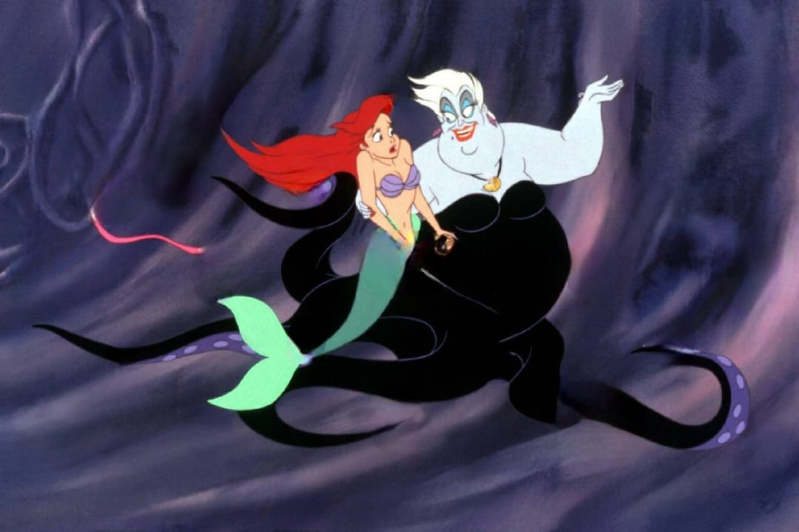

Érase una vez un reino submarino de gran majestuosidad, donde habitaban todas las criaturas marinas que el hombre solo ha conocido en su imaginación y viejas leyendas. Este reino era gobernado por el sabio rey Tritón, el cual tenía cinco bellas hijas sirenas
La menor de todas se llamaba Ariel, quien superaba a sus hermanas en belleza, pero también en curiosidad y atrevimiento
La sirenita Ariel soñaba con ir hacia la superficie del mar para conocer la belleza del cielo y conocer de cerca a esas inteligentes criaturas llamadas humanos.
Conocedor del profundo interés de su hija, Tritón vivía preocupado y continuamente le decía que cuando cumpliese 15 años podría subir a la superficie, pero que nunca le permitiría acercarse a los humanos.
Ariel contaba los días para la marcada fecha. Así, cuando esta llegó pidió permiso a su padre y con la venia de este fue sin dudarlo a la superficie.
Ciertamente el cielo era tan lindo como se lo habían descrito. Tras unos minutos de deleite vio un extraño cuerpo que se acercaba al sitio exacto donde estaba.
Era un barco y quedó impactada por la majestuosidad de tan rara construcción
De inmediato se refugió tras una roca para no ser vista, pero lo suficientemente cerca como para saber quiénes iban a bordo de la embarcación.
De esa forma vio por primera vez en su vida a los humanos y quedó particularmente prendada de uno: el joven Eric, quien era el capitán de la tripulación y en su honor se estaba festejando con verdadero jolgorio.
Sin embargo, la felicidad de los humanos se vería importunada
Una rápida tormenta se formó y fieras olas zarandearon el barco, tirando por la borda a gran parte de sus tripulantes, Eric entre ellos.
Al ver esto la sirenita Ariel no podía quedarse impasible
De inmediato se dirigió a donde estaba Eric, luchando por su vida pero prácticamente inconsciente.
Ariel lo ayudó a llegar a la orilla y allí lo dejó. Mientras lo contemplaba con una mirada de amor, el joven Eric despertaba de su letargo y por unos segundos contempló a la bella muchacha que le había salvado la vida.

Quedaron enamorados a primera vista, pero Ariel sabía que era imposible, por lo que huyó a las profundidades del mar antes de que el príncipe pudiese verla bien.
Pasaron unos días y ninguno de los dos podía dejar de pensar en el otro.
Ariel estaba profundamente enamorada y cada día se escapaba en las tardes a su refugio secreto, donde había reunido restos y enseres de la embarcación que había conocido.
Tan raro era su comportamiento por esos días, que su padre la siguió y al descubrir qué era lo que con tanto celo guardaba su hija, se enojó mucho
Quería protegerla de la crueldad humana a toda costa y por ello no dudó en destruir los tesoros de Ariel con verdadera furia
La sirenita se sintió muy triste y castigada por su padre
No concebía por qué se le negaba lo más lindo que había sentido y tenido en su vida: el amor
Sin saber qué hacer, fue a ver a la malvada bruja Úrsula, para ver si con su magia negra podía ayudarla a convertirse en una mujer humana

La bruja de largos tentáculos la convirtió en mujer como deseaba, pero la privó de su principal encanto: su voz
Le explicó a la sirenita, ahora bella muchacha, que tenía tres días para besar al joven Eric. Si no lo hacía en ese lapso, volvería a ser una sirena y no recuperaría nunca su voz
Ariel aceptó el reto y se presentó ante el joven Eric, quien pensó que por el físico era su amada, a la que soñaba cada noche, pero dudaba constantemente dado que aquella tenía una bella voz y la que estaba a su lado no podía hablar
Durante tres días fueron varios los momentos en que la pareja pudo haberse besado, pero Úrsula impidió que esto ocurriese
En su malévola mente tenía un plan y era apoderarse para sí de la voz de la sirenita, con lo que adoptaría su forma y sería ella quien se casase con el príncipe
Llegado el término del plazo el plan de Úrsula se materializó. Ariel volvió a ser sirena y la bruja adoptó la figura de la bella muchacha, con su voz y todo
Hechizado, Eric le propuso casarse enseguida a la bruja y creyó que Ariel era una malvada criatura que lo había engañado

Por suerte, antes del sí quiero todos los animales y criaturas marinas, que adoraban a la sirenita Ariel y querían su felicidad por encima de todo, el rey incluido, que había recapacitado, acudieron en ayuda de la niña e impidieron la boda
Rápidamente descubrieron a Úrsula y se las arreglaron para que Ariel recuperase su voz
Eric cayó en la cuenta de que había sido engañado, por lo que acabó con la vida de la bruja y no dudó en besar a Ariel, aunque fuera una sirena
Pero sucede que con el beso los sueños de ambos se cumplieron. El amor todo lo puede y la cola de Ariel se convirtió en un par de lindas piernas
Así, la pareja vivió feliz para siempre y lograron establecer la armonía entre el reino de los hombres y el de las sirenas.